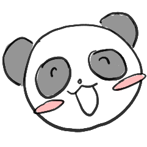
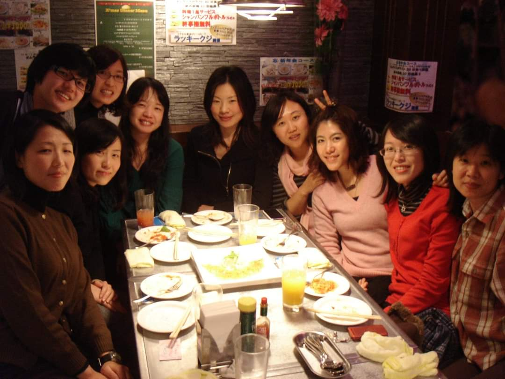
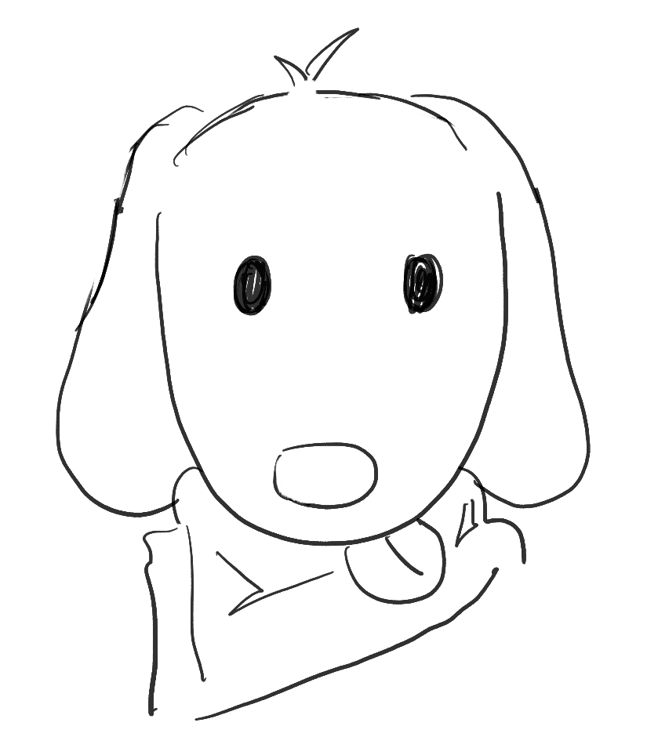
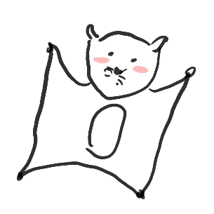
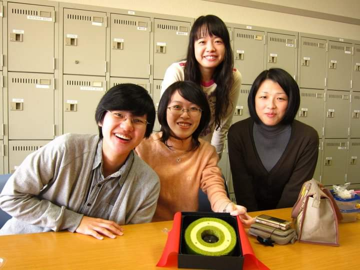
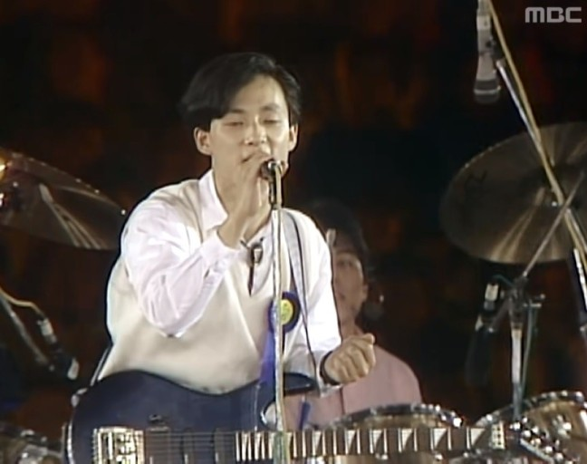

20대 시절에 해볼 걸 했던 일은 무엇인가요?


경험을 많이 못 했어요.
여러 가지 많이 하고 싶었어요.
수화 동아리나 봉사동아리 하고 싶었는데 소심해서 내가 잘할 수 있을까라는 생각 때문에 다 놓쳤던 것 같아요.
그래서 항상 학생들한테는 하고 싶은 거 싹 다 하라고 하거든요. 지나가면 못하는데,
20대가 아니면 할 수 없는 것들이 많은데.
여러분도 지금 시간이 너무 촉박한 것 같고 막 취업해야 될 거 같잖아요.
지금이 제일 한가해요. 그러니까 20대로 돌아가면 공부 안 하고 매일 나가서 놀 거예요.
아르바이트도 이것저것 전부 다 해보고 돈 없어도 여행 가보고.
경험을 소중하게 생각하고 하루하루를 엄청 충만하게 살고 싶어요.
시간이 지나고 봤을 때 20대때 하면 좋은 것은 무엇인가요?
강연을 듣는다든지 해서 지식을 더 쌓았으면 좋을 거 같아요. 우리 노마드 비교과 많잖아요.
물론 옛날 학생이었던 저는 안 들었겠죠. 그래도 독서 토론 이런 거 있잖아요.
그런 것도 하고 싶고, 봉사도 했으면 좋았을 걸 하고 생각해요.

대학생활 때 한 아르바이트 중에서 기억 남는 거나 좋았던 것은 무엇인가요?
처음에 일본 갔을 때는 야끼니쿠 집에서 아르바이트를 했어요. 그때 홀서빙을 처음 해봤는데, 그분들이 한국인 이지메를 시키는 거예요.
심지어 일을 인수인계를 안 해주니까 당연히 일이 서툴렀는데 사장님, 사모님 둘이서 나한테 한국말로 너는 바보냐 빠가야로냐 이런 말 되게 많이 했어요.
그 가게에서 한 달을 버텼는데 너무 무섭고 힘들어서 어떻게 할까 하다가 근처에 있던 작은 선술집에 직원 모집 공고가 붙어 있었어요.
거기서 아르바이트 했을 때는 하루 종일 설거지만 했는데도 그때가 제일 행복했던 것 같아요. 가게가 작아서 손님 몇 명 들어오면 끝이니까, 손님들 하고도 친해질 수 있고 모르는 일본어는 수첩에 적어 주시고.
저한테 되게 잘해줬어요. 시급은 얼마 못 받았는데 거의 부모님처럼 잘해주셔서 아직도 도쿄 가면 한번 찾아 봬요.
대학 시절 꿈이나 버킷리스트가 있었나요?
펜팔 친구 영향도 있었지만, 일본어나 외국어를 잘하는 사람이 돼서 부정적인 시선을 없애고 싶다는 생각도 했어요. 다른 언어도 관심이 생겨서 중국어나 태국어도 조금씩만 배우다가 일본어만 하게 됐네요.
그런 과정 때문에 그때는 외국여행을 많이 가고 싶다고 생각했던 것 같아요.
20대 때의 장래희망, 취업하고 싶었던 곳은 어디였나요?
학부 때는 통번역을 하고 싶었어요. 프리랜서로 작업실에서 자유롭게 일하고 싶었는데, 대학원 때 전공을 바꾸게 되면서 연구자가 되고 싶었어요. 아무래도 계속 공부하면서 연구하는 연구자나, 교육자가 되고 싶다고 생각을 했죠.
20대에서 가장 기억에 남는 순간은 언제인가요?

이거 되게 재미없는 이야기일 수 있는데요, 제가 일본 유학을 늦게 갔거든요. 학비가 많이 드는 걸 알아서, 어떻게 할지 고민하다가 문부과학성 국비유학을 알게 됐어요.
1년에 시험이 한 번밖에 없는데, 학비 면제에 생활비도 주고. 국비 유학으로 가면 정말 공부에 전념할 수 있을 것 같은 거예요.
그래서 도전했는데 처음이니까 당연히 안 됐어요. 석사 때 와세다에서 ‘한번 해볼까?’하면서 아무 정보도 없이 얼떨결에 쳤다가 떨어졌어요.
대학원 졸업하고 나서는 취업을 안 했으니까 이제 시간이 많잖아요. 그 시험에 올인을 한 거죠. 한 번 떨어지니까 위기의식도 느껴지고, 공부를 계속했어요.
사실 부끄러운 이야기이기도 한데, 저 여러 번 떨어졌거든요.
그래서 저는 20대 때의 그 고생이 제일 기억에 남아요. 그때는 4번 떨어지는 게 부끄러웠는데 지금은 상담할 때 학생들이 힘들어해도, 나보단 낫다고 말해줄 수 있으니까 좋은 것 같아요.
20대 때의 취미와 현재 취미는 무엇인가요?

취미가 딱히 없었는데, 음악 듣는 거를 좋아했어요. 조용한 노래나 일본 노래 많이 들었어요.
신해철, 넥스트 제일 좋아했어요.
20대 때 힘들었던 순간은 언제인가요?
일본에서 아르바이트했을 때. 그다음엔 국비 시험에 떨어졌을 때. 그때가 정말 암흑기라면 암흑기인데 지금 생각하니까 그게 도움이 되는 거 같아요.
그때는 1년에 한 번뿐인 시험이고 다른 애들은 이미 취업했거나 사회에서 뭔가를 하고 있는데, 유학을 하게 되면 다시 학생이 되는 거잖아요.
거기서 오는 막막함이 있었어요. 심리적으로 많이 힘들었죠.